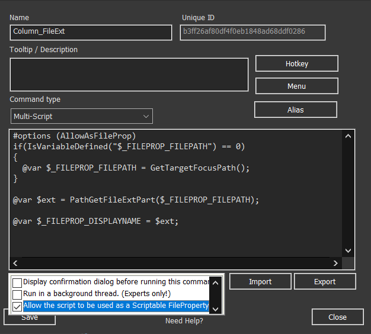
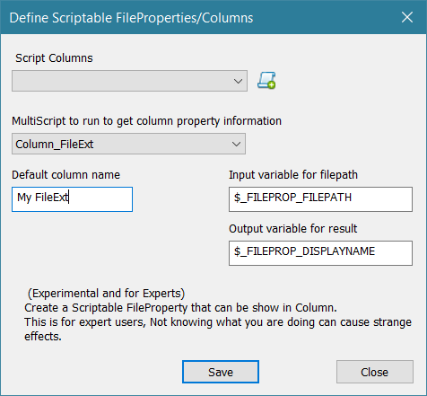

A Scriptable File Property allows you to display custom information about a file in the file list using a script. You can add this property as a column in the file manager, where the script runs on each file to gather and display information.
To create a Scriptable File Property, follow these steps:
A file property script must follow a specific format to work as a Scriptable File Property. Here’s a simple example of a script that retrieves the file extension of the current file:
@var $ext = PathGetFileExtPart($_FILEPROP_FILEPATH); @var $_FILEPROP_DISPLAYNAME = $ext;
This script uses two key variables:
Both of these variables are predefined, but you can customize their names when setting up the Scriptable Column (default names will be preselected).
To debug the script with the file in focus, you can add the following code, which assigns the path of the selected file to $_FILEPROP_FILEPATH if it's not already defined:
if(IsVariableDefined("$_FILEPROP_FILEPATH") == 0)
{
@gvar $_FILEPROP_FILEPATH = GetTargetFocusPath();
}
The full script will then be:
if(IsVariableDefined("$_FILEPROP_FILEPATH") == 0)
{
@gvar $_FILEPROP_FILEPATH = GetTargetFocusPath();
}
@var $ext = PathGetFileExtPart($_FILEPROP_FILEPATH);
@var $_FILEPROP_DISPLAYNAME = $ext;
Once the script runs, the value stored in $_FILEPROP_DISPLAYNAME will be shown in the column in the file list (if the scriptable file property is applied).
Note:
Running scripts as file properties can be risky. Since the script runs for each file in the list, incorrect or intensive scripts can cause performance issues.
To prevent errors, the script must be explicitly allowed to run as a file property.
You can enable this by selecting "Allow script to be used as a file property" in the User Defined Commands window or by adding #options (AllowAsFileProp) at the top of the script.
After creating the script, you can display its output in a column by defining a new Scriptable Column:
The new column should now be available, and you can add it to the file list as needed.
When using a scriptable file property as a column in the file list, the script will run once for each file. If the script involves heavy processing, this can impact performance, especially with large file lists. Ensure that the script is optimized for efficiency.